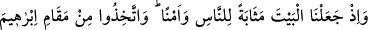
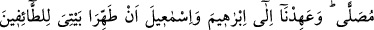
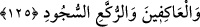

olduğunu belirtmişlerdir.” “Nasıl ki bir şeyle sürekli uğraşmayı belirtmek için
şâhidlere, ‘benû suhuf (evrak sahibi)’, cesaretli ve bahâdır kimselere ‘benû harb (harb
çocuğu)’ müslümanların çocuklarına da ‘benû İslâm (İslâm evladı)’ deniliyorsa bu da
öyle bir deyimdir.” denilmiştir.
Ayrıca âyette, hayırlı kimselerin derecesine ulaşıp kendisine uyulmasını isteyen
kişinin, Yüce Allah’a itaatta nefsini yorup, bütün gayretiyle ona sarılması gerektiğine
işâret vardır. Sa’dî der ki:
İyilik ve işbilirlikte Yûsuf (a.s.) gibi olmak için
Yıllar yılı uğraşmak lazımdır ki Mısır azizi olunabilsin.
125. Biz, Beyt’i (Kâbe’yi) insanlara toplanma mahalli ve güvenli bir yer kıldık. Siz
de İbrâhîm’in makamından bir namaz yeri edinin (orada namaz kılın). İbrâhîm ve
İsmâîl’e: Tavaf edenler, ibâdete kapananlar, rükû ve secde edenler için Evim’i
temiz tutun, diye emretmiştik.
Ey Muhammed! Kâbe-i Muazzama’yı insanlara bir toplanma yeri, hacılara ve umre
yapanlara bir sığınak ve barınak yaptığımız zamanı hatırla. Oradan ayrılıyorlar, sonra
tekrar ona dönüyorlardı. Bu ya defalarca haccederek Kâbe’yi ziyâret eden kişilerin ona
dönmeleri şeklinde olabilir, ya da Allah’a gelen elçiler ve O’nun evinin ziyaretçileri
veya benzerlerinin dönmesiyle olabilir. Çünkü onlar ilk ziyâret edenlere
benzediklerinden yaptıkları, öncekilerin yaptıklarına ilâve edilerek zikredilmiştir.
Âyette geçen “insanlar” kelimesinin başındaki “ ” takısı, ahd-i zihnî yâni zihnen
bilindiğini göstermek içindir.
Ayrıca “Biz Kâbe’yi güvenli bir yer kıldık.” Çünkü müşrikler: “Ev Allah’ın evidir,
ziyârete gelip oturanlar da Allah’ın evinin sâkinleridir.” diyerek “Harem” sınırları
içinde bulunan kişilere saldırmıyorlardı. Bir kişi, Harem’de babasının katilini bile
görse ona saldırmıyordu. Fakat Harem etrafında bulunanlara saldırıyorlardı. Bu âdeti
insanlar, İsmâîl (a.s.)’in dîninden alıp Nebî (s.a.)’ın zamanına kadar muhâfaza
etmişlerdir.
Âyetin mânâsı: “Kâbe, haccedeni âhıret azâbından korur.” şeklinde de olabilir. Şu
sebeble ki hacc, daha önce meydana gelmiş, yapılmış yemin keffâreti gibi mâlî haklar
dışında Allah’a âid bütün hakları sildirip affettirir. Kul haklarına gelince hacc onları
ortadan kaldıramaz, sorumluluğundan kurtaramaz. İbnü’ş-Şeyh de Hâşiye’sinde konuyu
böyle açıklamıştır. Kâfi’de, Fenârî’nin Tefsîrü’l-Fâtihâ’sında ve diğer bazı eserlerde